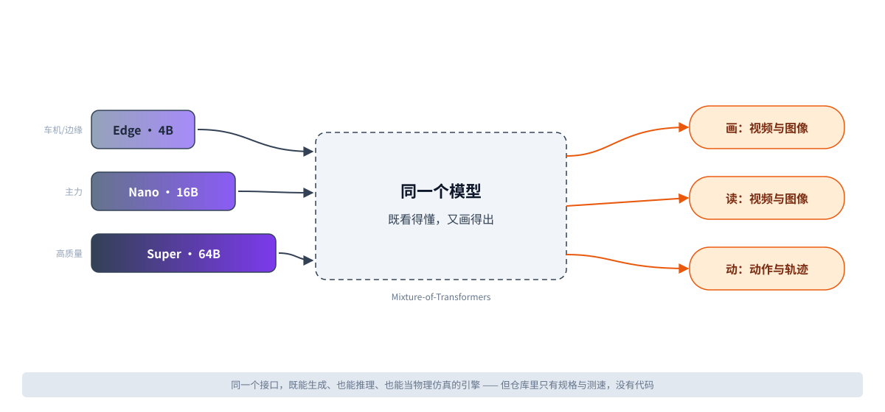
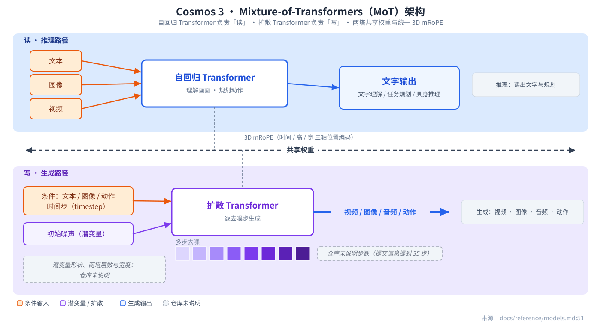
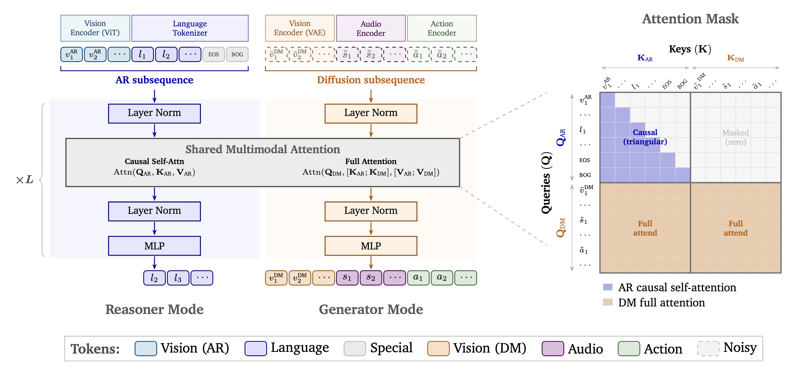
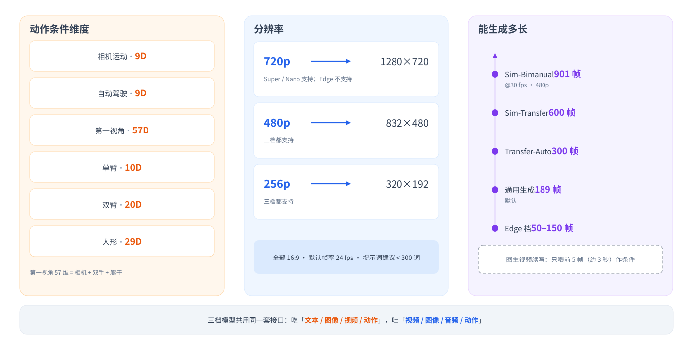
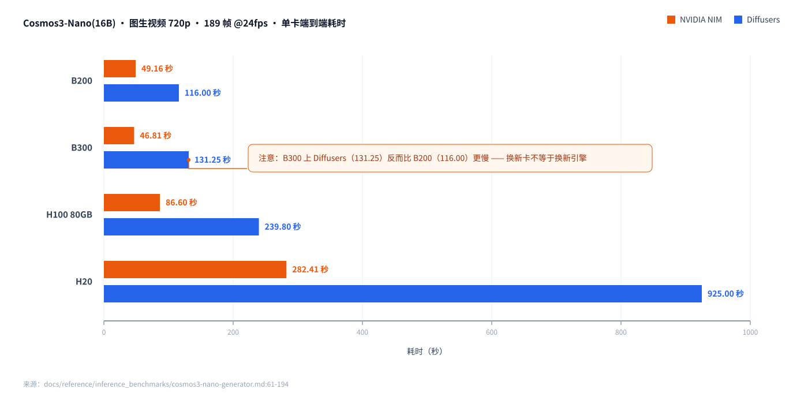
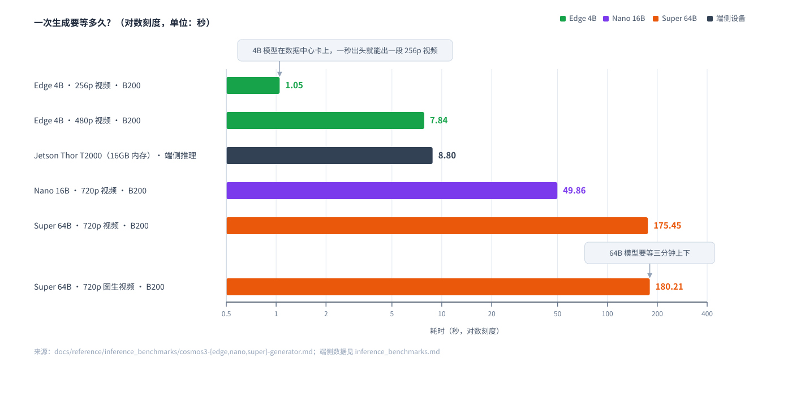

NVIDIA Cosmos 完全拆解
NVIDIA Cosmos 仓库完全拆解：一个零代码的「物理 AI 落地页」，以及它到底没告诉你的事
调研对象：
https://github.com/NVIDIA/cosmos（本地 checkout：cosmos/） 调研方式：离线，全部结论来自仓库文件内容与git命令输出。撰写日期：2026-11-08（Asia/Shanghai）。 引用约定：文件路径:行号。仓库里没有写明的，一律标注 「仓库未说明」，不做外部知识补齐。

图 1｜NVIDIA Cosmos 是什么 —— 看这里：左边三块是模型大小档位（Edge 4B / Nano 16B / Super 64B），右边三块是它能干的事（画、读、动）。中间那条横杠是关键：同一个模型既当"画家"又当"分析师"。
结论 / Conclusion
这个仓库一行模型代码都没有。 32 个受版本控制的文件里，14 个是 Markdown（4,398 行）、12 个是演示用的 GIF/MP4、4 个是品牌图，没有任何 .py、.sh、.ipynb、.yaml、权重或数据集。它是一张落地页 + 规格书 + 测速表：告诉你 Cosmos 3 有哪三档模型、每个模型能吃什么吐什么、跑一次要多少秒。
真正要紧的三件事：一，三档模型 Edge(4B) / Nano(16B) / Super(64B) 统一用 MoT（Mixture-of-Transformers） 架构，自回归 Transformer 管理解、扩散 Transformer 管生成、共享权重；二，仓库里有大量真实的延迟实测（Nano 的 i2v 720p 在 B300 上 46.81 秒、在 H20 上 282.41 秒），但一个质量分数都没有——PAIBench、Physics-IQ 只有名字没有结果；三，所有"训练相关"的内容只有四个方法名（SFT / LoRA / RL / distillation），数据、算法、rollout 循环、latent 形状，仓库通篇未说明。
技术版 / Technical
- 身份：
main分支，HEAD =71317702510f7c456ba3d702b84fb103546caea2（2026-11-06 17:56:04 +0100，Egor Krivov），本地为压平 clone，仅 1 个提交、无 tag。License = OpenMDW-1.1，LICENSE:28-30明文"对输出不施加任何限制"。 - 体量：tracked 文件 32 个 / 40,193,216 字节；其中 6 个 GIF 就占 21.9 MB（54%），因为 GitHub README 不自动播视频。
- 定位：
AGENTS.md:7——"New recipes, skills and code go to Cosmos Framework, not this repository." 本仓库只做索引与规格。 - 规格来源：
docs/reference/models.md（135 行，模型与 workflow 矩阵）+ 6 个 benchmark 页（合计约 3,100 行延迟数据）。 - 工作负载口径：Nano/Super 主表 = 189 帧 @24 FPS，batch 1；Edge 页 = 121 帧；FP8 页 = 首尾各 3 步 W8A16、中间步 W8A8（"35 步"这个总数只存在于 HEAD 的提交信息里，任何 tracked 文件都没写）。
一、这个仓库到底是什么：一个"零代码落地页"
傻瓜层： 你把它当成一份 NVIDIA 的宣传册 + 测速报告就行。里面没有可以 pip install 的模型包，没有 python train.py，没有推理脚本。你能拿到的全是"规格"和"秒数"。
技术版 / Technical
仓库自述（README.md:78）：
"This repository is the landing repo to start your physical AI journey with Cosmos. Here you can find detailed information on Cosmos models and explore Cosmos cookbook - a set of agent-runnable recipes for various objectives and industries."
AGENTS.md:3 说得更直接：
"This is the landing repository for NVIDIA Cosmos: the README, the model reference and the Cosmos Cookbook, an index of agent-runnable recipes. Code, recipes and agent skills live in Cosmos Framework."
实测文件构成（git ls-files | wc -l = 32）：
| 类别 | 文件数 | 字节 | 说明 |
|---|---|---|---|
| Markdown | 14 | 222,154 | 4,398 行（全部 md 行数之和） |
| GIF 演示 | 6 | 21,880,249 | README 六宫格演示，占 tracked 体积 54% |
| MP4 演示 | 6 | 17,691,745 | assets/demos/mp4/，README 未引用 |
| PNG | 2 | 386,974 | assets/brand/cosmos-logo.png（274×152）、docs/assets/cosmos3-model-architecture.png（2404×1126） |
| SVG | 2 | 6,562 | badge-new.svg（NVIDIA 绿 #76B900，3.6s 扫光动画）、badge-website.svg |
| LICENSE | 1 | 2,619 | OpenMDW-1.1 正文，49 行 |
| .gitignore | 1 | 2,413 | Python 项目通用模板（190 行）——本仓库没有 Python，这个文件实际不生效 |
代码文件数量：0。（git ls-files | grep -E "\.(py|sh|js|ts|ipynb|yaml|yml|toml|json|cpp|cu)$" → 无输出）
完整文件地图（全部 32 个）
| 路径 | 作用 |
|---|---|
README.md |
落地页：定位、三档模型表、"Find your path" 导航、Diffusers 快速开始、平台组件表、限制与许可、BibTeX。187 行 |
AGENTS.md |
给 AI/维护者的贡献规则：内容归属哪个仓库、示例 checkpoint 表要双改同步、链接用相对路径、PR 目标 main。23 行 |
COOKBOOK.md |
配方目录（纯链接索引）：Inference 6 条、Simulation 5 条、Post-training 6 条、Distillation 1 条、Evaluation 2 类；行业标签 ANY/AV/ROB/INFRA/MFG/AG/MED + GPU 预算标签 S/M/L/XL。116 行 |
SECURITY.md |
漏洞上报渠道（NVIDIA 提交表单 / psirt@nvidia.com）、PGP 要求。19 行 |
LICENSE |
OpenMDW-1.1 全文：授权、保留声明义务、专利诉讼终止条款、"对输出不施加任何限制或义务"。不含 NOMINA / 非商用条款（git grep -i NOMINA 零命中） |
.gitignore |
Python 通用忽略模板（190 行） |
.github/ISSUE_TEMPLATE/bug_report.md |
Bug 模板：复现步骤、期望 vs 实际、错误栈折叠区、系统信息表。64 行 |
.github/ISSUE_TEMPLATE/feature_request.md |
功能请求模板：问题与用例、提案、受影响区域多选。29 行 |
docs/reference/models.md |
模型参考主文档（135 行）：三档基础模型、10 个示例 checkpoint、6 个 FP8 checkpoint、MoT 架构段、11 种 workflow 的 I/O 矩阵、4 个 Simulation checkpoint 的 I/O、生成设置、采样默认值、局限性 |
docs/reference/inference_benchmarks.md |
基准索引 + Reasoner 基准全量表（817 行）：Edge/Nano/Super 在 vLLM 上的 TTFT / 请求延迟 / 吞吐（并发 1/64/128/256），外加 Jetson/DGX 的 HF Transformers eager 对比 |
docs/reference/inference_benchmarks/cosmos3-edge-generator.md |
Edge(4B) 延迟表（201 行）：t2i/t2v/i2v/v2v，TensorRT-LLM 覆盖 8 款平台，视频统一 121 帧 |
docs/reference/inference_benchmarks/cosmos3-nano-generator.md |
Nano(16B) BF16 全量页（927 行）：方法论、workload 定义、t2v/i2v/t2i、v2v/t2av/v2av/i2av、6 种 transfer 控制 × 8 GPU、8 张 action 生成表 |
docs/reference/inference_benchmarks/cosmos3-super-generator.md |
Super(64B) BF16 全量页（929 行），结构同 Nano，但 GPU 数配置不同（部分 8 卡），含专属注记 8/9 |
docs/reference/inference_benchmarks/cosmos3-nano-fp8-generator.md |
Nano-FP8 页（456 行）：PyTorch*（另一种 FP8 recipe）vs Diffusers FP8 vs NIM 2.1.0，含 GB300 区块 |
docs/reference/inference_benchmarks/cosmos3-super-fp8-generator.md |
Super-FP8 页（456 行） |
docs/assets/cosmos3-model-architecture.png |
Cosmos 3 模型架构图，2404×1126 RGBA，被 models.md:53 引用 |
assets/ASSET_SPECS.md |
素材规格说明（39 行）：品牌资产、Demo 六宫格每个 GIF 的来源与重切规格 |
assets/brand/cosmos-logo.png |
Cosmos Logo，274×152 RGB |
assets/brand/badge-new.svg |
44×20 动画 "NEW" 徽章（#76B900 + 3.6s 扫光 + prefers-reduced-motion 降级） |
assets/brand/badge-website.svg |
138×20 "Cosmos 3 website" 盾牌徽章 |
assets/demos/physics_newton_cradle.gif |
牛顿摆演示 640×369 @20fps，42 帧，2.1s，4.01 MB |
assets/demos/transfer_worldscenario.gif |
世界场景迁移（控制布局→写实驾驶）640×360 @15fps，40 帧，2.67s，4.49 MB |
assets/demos/policy_screwdriver.gif |
真机策略执行 480×270 @12fps，48 帧，4.01s，1.38 MB |
assets/demos/driving_sim_falling_rocks.gif |
驾驶仿真落石 480×270 @10fps，55 帧，5.5s，4.34 MB |
assets/demos/fd_egocentric_repair_poses.gif |
前向动力学第一人称 rollout 520×293 @12fps，48 帧，4.01s，3.54 MB |
assets/demos/reasoner_driving_hazard.gif |
World Reasoner 驾驶危险预判 600×338 @14fps，42 帧，3.0s，4.11 MB |
assets/demos/mp4/*.mp4（6 个） |
上述演示的 MP4 源，分辨率/帧率更高（见文件地图下方的视频） |
一又二分之一、仓库自带的四段演示（原素材，未改动）
傻瓜层： 仓库里放了四段真实演示视频，是这个"只有文档"的仓库里唯一能看到"模型到底能干嘛"的东西。
图 4｜牛顿摆（physics_newton_cradle） —— 640×369 @20fps，42 帧，2.1 秒，GIF 版 4.01 MB。这是仓库里唯一"物理正确性"看起来最直观的例子：链条、碰撞、重力。
图 5｜世界场景迁移（transfer_worldscenario） —— 640×360 @15fps，40 帧，2.67 秒。输入是"控制用"的结构图（车道线、物体框），输出是写实的驾驶视频——这就是 v2v-transfer workflow 的样子。
图 6｜第一视角前向动力学（fd_egocentric_repair_poses） —— 520×293 @12fps，48 帧，4.01 秒。画面上有手部姿态叠层：模型吃进 57 维第一视角动作，吐出下一步该怎么动的画面。
图 7｜真机策略执行（policy_screwdriver） —— 480×270 @12fps，48 帧，4.01 秒。任务原文是"把螺丝刀和手套放进紫色容器"，对应 Cosmos3-Nano-Policy-DROID / Cosmos3-Edge-Policy-DROID 两个 checkpoint。
二、三档模型与统一架构：MoT
傻瓜层： Edge 是车机上的小模型，Nano 是主力，Super 是大机器。它们不是三种架构，而是同一个架构的三种大小——所以你会看到同一个 API、同一种输入输出，只是慢一点或快一点。
技术版 / Technical
README.md:69：
"Cosmos 3, the current model family, is a suite of omnimodal world models built on a unified Mixture-of-Transformers architecture"
docs/reference/models.md:51 补充架构细节：MoT = 自回归 Transformer（理解/推理）+ 扩散 Transformer（生成）共享权重 + 3D mRoPE。
三档基础模型（models.md:9-11）：
| 档位 | 参数 | 定位 |
|---|---|---|
| Cosmos3-Edge | 4B | 边缘部署，NIM / Jetson / DGX Spark |
| Cosmos3-Nano | 16B | 主力，生成 + 推理 + 仿真 + 策略 |
| Cosmos3-Super | 64B | 高质量生成，8 卡起步 |

图 2｜Cosmos 3 的 MoT 架构 —— 看这里：上半部分是读（文本/图像/视频 → 自回归 Transformer → 文字理解、任务规划）；下半部分是写（扩散 Transformer 逐去噪 → 视频/图像/音频/动作）。两块之间标着的共享权重和 3D mRoPE 是关键：同一个模型既能"看懂"也能"画出"，所以它才能一边看摄像头一边预测下一帧。
仓库自带的官方架构图（原图 2404×1126，未修改）：

图 3｜官方架构图（原图） —— 看这里：这是 NVIDIA 自己画的 MoT 结构，注意 AR 与 diffusion 两条通路在同一张权重表上。
推理与 rollout：文档说了什么，没说什么
傻瓜层： 官方说法是"闭环自回归"——模型看着前几帧和动作指令，一帧一帧往下生成。但具体一帧怎么算、缓存什么、跑多少轮，仓库里一个字都没有。
技术版 / Technical
仓库对推理循环的唯一权威描述在 docs/reference/models.md：
| 环节 | 仓库给出的 | 出处 |
|---|---|---|
| 采样器 | 明确提到 diffusion transformer 与 "denoising steps"；是否 flow matching、guidance/CFG 取值仓库未说明（只出现过 "CFG-parallel" 这一并行切分名词） | models.md:51、cosmos3-nano-fp8-generator.md:36,145 |
| 步数 | "35 steps" 只存在于 HEAD 提交信息，任何 tracked 文件都没有 | git log -1 正文 |
| 混合精度策略 | 首尾各 3 步 W8A16，中间步 W8A8（FP8 页） | cosmos3-nano-fp8-generator.md:145 |
| v2v-predict 条件 | 只喂前 5 帧（同分辨率，约 3 秒） | models.md:73,83 |
| rollout 轮数 | 仓库未说明（只有"闭环""自回归"的定性描述） | — |
| action 注入位置 | 仓库未说明（只说明动作是"轨迹"条件） | — |
| 缓存 / 重算 | 仓库未说明 | — |
三、输入输出契约：这才是这个仓库真正的价值
傻瓜层： 这张表就是 Cosmos 的"接口文档"。你要写代码，照着它拼输入输出就行。
技术版 / Technical
11 种 workflow 的完整 I/O 矩阵（docs/reference/models.md:68-79）：
| Workflow | 输入 | Super 输出 | Nano 输出 | Edge 输出 |
|---|---|---|---|---|
| t2v | Text | Video 256p/480p/720p | Video 256p/480p/720p | Video 256p/480p |
| t2sv | Text | Video with sound 256p/480p/720p | 同左 | Not supported |
| i2v（首帧） | Text + image (JPG/PNG/JPEG/WEBP) | Video 256/480/720p | 同左 | Video 256/480p |
| i2sv | Text + image | Video with sound 256/480/720p | 同左 | Not supported |
| v2v — transfer | Text + MP4（edge/blur/depth/segmentation map） | Video 256/480/720p | 同左 | Not supported |
| v2v — predict | Text + MP4（前 5 帧） | Video 256/480/720p | 同左 | Not supported |
| t2i | Text string | Image 256/480/720p | 同左 | Not supported |
| Visual reasoning | Text, MP4, image | Text | Text | Text |
| Forward dynamics | Text, image, video, action | Video 256/480/720p | 同左 | Video 256/480p |
| Inverse dynamics | Text, video | Action | Action | Action |
| Action policy | Text, image, video | Action + video | Action + video | Action + video |

图 8｜Cosmos 3 的生成契约 —— 看这里：左上角是动作条件的六个维度（camera 9D 到 egocentric 57D），中间是三档分辨率（256p = 320×192、480p = 832×480、720p = 1280×720，都是 16:9），右边是能生成多长（通用 5–300 帧、默认 189 帧；Sim-Bimanual 可以到 901 帧）。
规格细则（models.md:82-86, 94-117）：
- 分辨率换算：720p = 1280×720，480p = 832×480，256p = 320×192
- 通用生成设置：5–300 帧，默认 189 帧，帧率默认 24；Edge 为 50–150 帧
- 动作条件维度：camera motion 9D · AV 9D · egocentric 57D · single-arm 10D（DROID/UR/Fractal/Bridge/UMI）· dual-arm 20D · humanoid 29D（AgiBot）
- 相机阵列：1–11 视角（不含 LiDAR），支持标准与鱼眼
- 输出格式：JPG、MP4、AAC-in-MP4（立体声 48 kHz）、JSON actions、text
- 提示词建议长度：< 300 words
10 个示例 / 后训练 checkpoint（models.md:15-26，与 README.md:142-153 重复列出，AGENTS.md:13 要求两个文件在同一 commit 里同步改）：
| Checkpoint | Base | 内容 |
|---|---|---|
| Cosmos3-Nano-Sim-Auto | Nano | 闭环驾驶仿真：多视角相机视频 + LiDAR |
| Cosmos3-Nano-Transfer-Auto | Nano | 多视角驾驶视频合成数据，最多 11 路相机 + LiDAR |
| Cosmos3-Nano-Sim-Bimanual | Nano | 闭环仿真——action-conditioned 自回归 rollout |
| Cosmos3-Nano-Sim-Transfer | Nano | 自回归迁移，带 depth / segmentation / edge / blur 控制 |
| Cosmos3-Super-Text2Image | Super | 高质量文生图 |
| Cosmos3-Super-Text2Image-4Step | Super | 高质量文生图，快 17–25× |
| Cosmos3-Super-Image2Video | Super | 高质量图生视频 |
| Cosmos3-Super-Image2Video-4Step | Super | 高质量图生视频，快 17–25× |
| Cosmos3-Nano-Policy-DROID | Nano | "Open SOTA" DROID 机器人策略 |
| Cosmos3-Edge-Policy-DROID | Edge | 边缘规模的 DROID 策略 |
6 个 FP8 量化 checkpoint（models.md:28-42）：Cosmos3-Nano-FP8、Cosmos3-Super-FP8，以及 4 个 Super 专项（Text2Image / Text2Image-4Step / Image2Video / Image2Video-4Step，位于各自仓库的 fp8 分支）。models.md:44-47 补充："FP8 weights retain the exported activation policy: the generator can use A16 on boundary denoising steps and its reasoner, while standalone reasoner inference follows its own backend policy."
四个 Simulation checkpoint 的 I/O（models.md:94-104）：
| Checkpoint | 输入 | 输出 |
|---|---|---|
| Sim-Auto | Text + world-scenario map 控制视频（车道线、物体 cuboid），每相机一路 + LiDAR 一路 | 同步多视角视频 + LiDAR，闭环自回归生成；10–30 FPS，480p 或 720p |
| Transfer-Auto | 同上 | 同步多视角视频 + LiDAR，最多 300 帧；10–30 FPS，480p/720p |
| Sim-Bimanual | 起始图 + 逐帧 action 与相机运动（JSON），text 可选 | 逐帧生成视频；最多 901 帧 @30 FPS，480p；本体 AgiBot、YAM |
| Sim-Transfer | Text + 模拟器渲染的控制视频：depth / segmentation / edge / blur | 与输入几何对齐的写实视频；最多 600 帧 @30 FPS，480p |
models.md:101-104 另称：Sim-Transfer 能在单台 GB200 上实时并行跑 8 个环境；测试硬件 H100 与 B200；加速引擎为 PyTorch、vLLM-Omni、FlashDreams（sim-auto 与 sim-bimanual）、SGLang。
四、训练与后训练：只有方法名
傻瓜层： 仓库对"怎么训出来的"几乎闭口不谈。四个词——SFT、LoRA、强化学习、蒸馏——就完了，连数据是啥都没说。
技术版 / Technical
| 项 | 仓库给出的 | 出处 |
|---|---|---|
| 预训练数据 | 仓库未说明（无数据集名、无规模、无 token/小时数） | — |
| 后训练数据集 | 仓库未说明（git grep -i "Reason1" → 0 命中） |
— |
| 后训练方法 | 只列方法名：SFT、LoRA、RL、distillation | README.md:80,162 |
| RL 具体算法 | 仓库未说明（git grep -i "GRPO" 仅命中 GIF 二进制假阳性；RLHF 0 命中） |
实测 |
| 数据管线 | 由 Cosmos Curator（分布式处理/标注/过滤/去重）与 Cosmos Evaluator 承担，二者均为外链仓库 | README.md:163-164 |
| tokenizer / latent 形状 / 压缩率 | 仓库未说明（git grep -i tokenizer → 0 命中，没有 16×16×16 之类信息） |
— |
评测基准名（仅名字，无分数） —— COOKBOOK.md:86-87：
- 生成：PAI-Bench-G（video）、PAI-Bench-C（controlled video）、PhysicsIQ（physics）、UniGenBench（images）、RBench（robotics）
- 推理：TAR & VANTAGE，用 VLMEvalKit，跑在任意 OpenAI 兼容端点上
- 策略闭环评测（仅名字）：DROID、LIBERO、RoboCasa ——
COOKBOOK.md:71
注意：MJSynth / Physion 这类任务在本仓库不存在（0 命中）。最接近物理评测的是 PhysicsIQ。
物理 AI 落地场景（README.md:67）：robotics、autonomous vehicles、smart infrastructure、manufacturing、healthcare、agriculture；行业标签码 ANY/AV/ROB/INFRA/MFG/AG/MED（COOKBOOK.md:32-40）。README 演示网格另展示 6 类能力：物理感知生成、世界场景迁移、动作策略、驾驶仿真、action-conditioned 世界模型、世界推理（README.md:26-55）。
五、评测：这个仓库只有速度，没有质量
傻瓜层： 仓库里能查到的数字，全是"跑一次多少秒"。至于"生成的视频好不好、物理对不对"，一个分数都没有，只有基准的名字。
技术版 / Technical
docs/reference/inference_benchmarks.md:3 原文：
"This page is about speed (latency, throughput). For quality benchmarks (PAIBench, Physics-IQ, VLMEvalKit, ...), see
evaluation/."
:7 强调："Empty cells mean that combination has not been measured yet — not that it is unsupported."
工作负载口径：Nano/Super 主表 = 189 帧 @24 FPS，batch 1，1 GPU（Super 部分区块为 8 卡，见下文）；Edge 页 = 121 帧。
5.1 Cosmos3-Nano (16B) BF16 —— t2v / i2v / t2i（秒）
| GPU | 引擎 | t2v 256p | t2v 480p | t2v 720p | i2v 256p | i2v 480p | i2v 720p | t2i 256p | t2i 480p | t2i 720p |
|---|---|---|---|---|---|---|---|---|---|---|
| RTX PRO 6000 Blackwell | PyTorch | 13.95 | 180.81 | 786.37 | 14.08 | 182.14 | 788.80 | 2.99 | 4.51 | 7.12 |
| vLLM-Omni | 10.65 | 105.61 | 371.53 | 11.04 | 107.77 | 376.44 | 1.59 | 2.87 | 4.99 | |
| Diffusers | 11.20 | 112.00 | 392.00 | 12.00 | 112.00 | 397.00 | 2.00 | 4.00 | 5.00 | |
| TensorRT-LLM | 10.27 | 102.55 | 369.78 | 10.77 | 105.03 | 374.89 | 1.18 | 2.35 | 4.50 | |
| NIM | 5.06 | 46.32 | 170.57 | 4.90 | 46.43 | 171.34 | 0.72 | 1.00 | 1.48 | |
| H20 | PyTorch | 30.57 | 257.51 | 931.39 | 31.36 | 257.10 | 933.07 | 3.06 | 6.51 | 12.31 |
| vLLM-Omni | 28.58 | 256.97 | 929.81 | 29.50 | 261.56 | 940.16 | 1.73 | 4.92 | 10.73 | |
| Diffusers | 30.20 | 258.00 | 926.00 | 31.00 | 258.00 | 925.00 | 3.00 | 6.00 | 10.00 | |
| TensorRT-LLM | 26.92 | 251.79 | 908.90 | 28.07 | 254.79 | 915.71 | 1.94 | 5.55 | 11.56 | |
| NIM | 11.78 | 86.02 | 282.28 | 11.67 | 86.66 | 282.41 | 1.09 | 1.61 | 2.80 | |
| H100 NVL | PyTorch | 10.03 | 84.12 | 297.27 | 10.19 | 84.50 | 298.57 | 2.77 | 2.83 | 4.21 |
| vLLM-Omni | 9.25 | 80.75 | 281.99 | 9.62 | 82.61 | 286.19 | 1.55 | 1.92 | 3.43 | |
| Diffusers | 11.00 | 90.00 | 324.20 | 11.00 | 91.00 | 325.20 | 3.00 | 3.00 | 4.00 | |
| H200 NVL | PyTorch | 8.17 | 69.79 | 244.39 | 8.27 | 69.99 | 246.62 | 2.75 | 2.85 | 3.58 |
| vLLM-Omni | 7.44 | 64.58 | 240.05 | 7.83 | 66.39 | 243.52 | 1.53 | 1.58 | 2.81 | |
| Diffusers | 9.00 | 74.00 | 276.20 | 9.00 | 74.00 | 275.20 | 3.00 | 3.00 | 4.00 | |
| H100 80GB HBM3 | PyTorch | 7.61 | 59.83 | 207.78 | 7.64 | 59.95 | 207.87 | 3.01 | 3.01 | 3.45 |
| vLLM-Omni | 6.97 | 58.17 | 202.29 | 7.37 | 59.77 | 205.97 | 1.61 | 1.53 | 2.61 | |
| Diffusers | 9.00 | 68.00 | 240.00 | 9.00 | 68.00 | 239.80 | 3.00 | 3.00 | 4.00 | |
| TensorRT-LLM | 6.50 | 60.10 | 223.51 | 6.90 | 63.24 | 226.15 | 1.02 | 1.30 | 2.63 | |
| NIM | 3.34 | 24.71 | 86.16 | 3.39 | 24.65 | 86.60 | 1.02（与 TRT-LLM 并列） | 1.04 | 1.15 | |
| H200 141GB HBM3 | PyTorch | 7.53 | 60.18 | 214.28 | 7.65 | 60.51 | 214.80 | 2.96 | 3.04 | 3.28 |
| vLLM-Omni | 6.79 | 58.14 | 208.36 | 7.28 | 59.64 | 209.65 | 1.57 | 1.52 | 2.60 | |
| Diffusers | 9.00 | 67.00 | 239.60 | 9.00 | 67.20 | 240.00 | 3.00 | 3.00 | 4.00 | |
| TensorRT-LLM | 6.42 | 60.57 | 225.06 | 6.74 | 63.54 | 231.15 | 1.05 | 1.30 | 2.60 | |
| NIM | 3.15 | 24.62 | 85.55 | 3.16 | 24.67 | 87.67 | 1.02 | 1.05 | 1.08 | |
| B200 | PyTorch | 4.56 | 33.20 | 114.85 | 4.60 | 33.08 | 113.90 | 2.68 | 2.75 | 2.87 |
| vLLM-Omni | 4.03 | 32.04 | 107.79 | 4.33 | 33.09 | 110.08 | 1.49 | 1.20 | 1.76 | |
| Diffusers | 7.00 | 36.80 | 117.00 | 7.00 | 37.00 | 116.00 | 3.00 | 3.20 | 3.00 | |
| TensorRT-LLM | 3.43 | 28.28 | 100.02 | 3.70 | 29.33 | 102.35 | 0.86 | 0.88 | 1.40 | |
| NIM | 2.00 | 13.71 | 49.86 | 1.95 | 13.76 | 49.16 | 0.58 | 0.63 | 0.67 | |
| B300 | vLLM-Omni | 4.46 | 32.18 | 102.10 | 5.61 | 33.45 | 104.75 | 1.97 | 1.81 | 2.34 |
| Diffusers | 6.40 | 39.32 | 121.74 | 13.40 | 49.59 | 131.25 | 3.86 | 3.86 | 3.99 | |
| TensorRT-LLM | 3.31 | 26.52 | 91.15 | 3.70 | 27.73 | 93.88 | 1.36 | 1.30 | 1.40 | |
| NIM | 1.98 | 13.10 | 45.76 | 2.07 | 13.63 | 46.81 | 0.72 | 0.84 | 0.87 |

图 9｜同一个 Nano(16B)，不同卡差 6 倍 —— 看这里：横条是 i2v 720p、189 帧的端到端秒数，从 B300 的 46.81 秒一路到 H20 的 282.41 秒；NIM 那一排（橙色）永远最快，而 Diffusers 在 B300 上反而比 B200 慢（131.25 vs 116.00）——换新卡不等于换新引擎。
5.2 Cosmos3-Super (64B) BF16 —— t2v / i2v / t2i（秒）
注意 GPU 数随区块变化：RTX PRO 6000 / H20 / H100 NVL / H100 80GB 用 8 卡；H200 NVL、H200 141GB、B200、B300 用 1 卡。直接横比会得出错误结论。
| GPU | 引擎 | 卡数 | t2v 256p | t2v 480p | t2v 720p | i2v 256p | i2v 480p | i2v 720p | t2i 256p | t2i 480p | t2i 720p |
|---|---|---|---|---|---|---|---|---|---|---|---|
| RTX PRO 6000 Blackwell | PyTorch | 8 | 66.04 | 118.90 | 427.16 | 66.54 | 118.95 | 427.96 | 93.18 | 93.39 | 93.47 |
| vLLM-Omni | — | 11.66 | 80.94 | 240.27 | 3.11 | 3.54 | 5.70 | ||||
| Diffusers | 8 | 25.39 | 154.25 | 437.57 | 26.29 | 156.16 | 540.65 | 16.90 | 17.52 | 16.73 | |
| NIM | 8 | 4.15 | 27.18 | 91.15 | 4.01 | 27.39 | 91.65 | 1.52 | 1.64 | 1.61 | |
| H20 | PyTorch | 8 | 27.72 | 152.46 | 492.41 | 28.22 | 153.19 | 491.93 | 14.18 | 16.46 | 20.92 |
| vLLM-Omni | — | 19.65 | 148.77 | 488.51 | 5.12 | 5.44 | 8.85 | ||||
| Diffusers | 8 | 26.66 | 161.49 | 517.37 | 27.65 | 165.91 | 530.44 | 18.29 | 18.48 | 18.46 | |
| NIM | 8 | 6.79 | 51.83 | 191.74 | 6.60 | 52.28 | 191.86 | 1.01 | 2.27 | 1.93 | |
| H100 NVL | PyTorch | 8 | 16.83 | 64.14 | 186.19 | 16.96 | 64.17 | 186.47 | 19.86 | 19.80 | 19.87 |
| vLLM-Omni | — | 8.48 | 59.44 | 212.53 | 3.54 | 3.48 | 4.11 | ||||
| Diffusers | 8 | 24.21 | 108.70 | 322.28 | 25.45 | 112.36 | 325.56 | 16.56 | 16.60 | 16.88 | |
| H200 NVL | PyTorch | 8 | 24.78 | 47.69 | 142.35 | 24.70 | 47.60 | 141.62 | 32.86 | 33.05 | 33.16 |
| vLLM-Omni | 1 | 27.54 | 252.33 | 911.49 | 27.90 | 254.29 | 915.05 | 2.73 | 6.28 | 11.02 | |
| Diffusers | 1 | 33.00 | 286.80 | 1036.00 | 33.00 | 287.20 | 1034.60 | 5.00 | 8.00 | 12.00 | |
| H100 80GB HBM3 | vLLM-Omni | 8 | (未测) | 6.48 | 38.31 | (空，见注 8) | 5.09 | 5.16 | 4.91 | ||
| Diffusers | 8 | 19.40 | 56.39 | 174.57 | 19.98 | 55.63 | 184.81 | 17.97 | 18.03 | 19.28 | |
| H200 141GB HBM3 | PyTorch | 8 | 11.82 | 41.78 | 123.49 | 11.80 | 42.10 | 123.57 | 13.48 | 13.53 | 13.50 |
| vLLM-Omni | 1 | 25.61 | 219.11 | 769.63 | 25.47 | 220.70 | 766.33 | 2.83 | 5.70 | 10.24 | |
| Diffusers | 1 | 31.00 | 251.60 | 886.20 | 31.00 | 249.20 | 879.20 | 5.00 | 8.00 | 11.00 | |
| TensorRT-LLM | 1 | 24.21 | 234.08 | 853.44 | 24.46 | 230.02 | (空) | 2.24 | 5.10 | 10.77 | |
| NIM | 1 | 9.75 | 83.09 | 298.16 | 9.27 | 83.86 | 300.45 | 1.68 | 1.74 | 2.53 | |
| B200 | PyTorch | 1 | 14.66 | 114.38 | 407.50 | 14.71 | 112.40 | 397.31 | 4.51 | 4.78 | 7.25 |
| vLLM-Omni | 1 | 13.84 | 114.08 | 383.84 | 14.13 | 115.17 | 386.35 | 2.32 | 3.29 | 5.99 | |
| Diffusers | 1 | 19.00 | 127.20 | 414.40 | 19.20 | 127.00 | 414.80 | 4.40 | 6.00 | 8.00 | |
| TensorRT-LLM | 1 | 12.32 | 104.63 | 367.12 | 12.67 | 105.74 | 372.60 | 1.69 | 2.84 | 5.72 | |
| NIM | 1 | 5.43 | 47.71 | 175.45 | 5.18 | 47.54 | 180.21 | 0.93 | 0.95 | 1.36 | |
| B300 | vLLM-Omni | 1 | 14.57 | 109.03 | 366.66 | 14.14 | 111.42 | 368.73 | 5.05 | 3.79 | 7.08 |
| Diffusers | 1 | 17.73 | 125.70 | 398.94 | 25.21 | 132.23 | 410.81 | 6.49 | 6.76 | 7.11 | |
| TensorRT-LLM | 1 | 11.85 | 97.66 | 333.28 | 12.15 | 98.90 | 336.20 | 2.40 | 2.77 | 5.43 | |
| NIM | 1 | 5.42 | 45.96 | 164.10 | 5.27 | 46.03 | 164.42 | 1.39 | 1.44 | 1.49 |
5.3 FP8 量化页（Nano-FP8 / Super-FP8）
cosmos3-nano-fp8-generator.md:60-136（1 GPU；PyTorch* 是另一种 FP8 recipe，不可与其他引擎直接比较）：
| GPU | 引擎 | t2v 256p | t2v 480p | t2v 720p | i2v 256p | i2v 480p | i2v 720p | t2i 256p | t2i 480p | t2i 720p |
|---|---|---|---|---|---|---|---|---|---|---|
| RTX PRO 6000 Blackwell | PyTorch* | 15.27 | 154.79 | 589.57 | 15.21 | 154.24 | 587.19 | 1.75 | 2.76 | 5.13 |
| NIM | 15.50 | 151.90 | 597.67 | 14.34 | 151.67 | 595.21 | 1.11 | 2.03 | 3.49 | |
| H20 | PyTorch* | 37.03 | 381.98 | 1505.14 | 37.09 | 380.01 | 1501.45 | 2.33 | 5.73 | 12.01 |
| H100 80GB HBM3 | PyTorch* | 9.15 | 83.30 | (空) | 5.75(8卡) | 19.08(8卡) | 55.33(8卡) | 1.84 | 1.92 | 2.94 |
| Diffusers | (空) | 234.65 | 830.32 | (空) | (空) | 21.47 | 24.36 | |||
| H200 141GB HBM3 | PyTorch* | 9.00 | 85.98 | 322.54 | 9.02 | 85.61 | 318.65 | 1.88 | 1.85 | 2.98 |
| Diffusers | (空) | 231.20 | 825.50 | (空) | 234.20 | 819.74 | (空) | 19.90 | 23.20 | |
| NIM | 9.75 | 83.09 | 298.16 | 9.27 | 83.86 | 300.45 | 1.68 | 1.74 | 2.53 | |
| B200 | PyTorch* | 5.25 | 45.67 | 168.91 | 5.18 | 45.24 | 167.93 | 1.48 | 1.47 | 1.85 |
| Diffusers | (空) | 130.78 | 405.87 | (空) | 129.97 | 408.14 | (空) | 17.38 | 19.21 | |
| NIM | 5.43 | 47.71 | 175.45 | 5.18 | 47.54 | 180.21 | 0.93 | 0.95 | 1.36 | |
| B300 | PyTorch* | 4.92 | 42.14 | 149.55 | 4.96 | 41.10 | 151.74 | 2.37 | 2.29 | 2.47 |
| Diffusers | (空) | 120.69 | 381.36 | (空) | 120.90 | (空) | (空) | (空) | 18.40 | |
| NIM | 5.42 | 45.96 | 164.10 | 5.27 | 46.03 | 164.42 | 1.39 | 1.44 | 1.49 | |
| GB300 | Diffusers | (空) | 109.65 | 325.76 | (空) | 108.89 | 327.89 | (空) | 22.73 | 20.98 |
| NIM | 5.38 | 38.64 | 139.55 | 4.60 | 39.01 | 137.93 | 1.84 | 2.93 | 2.82 |
FP8 页重要注记（cosmos3-nano-fp8-generator.md:138-146）：
"FP8 is faster than BF16 for the PyTorch path throughout. For the Diffusers path it only pays off on long video workloads: short ones are slower in FP8,
t2iconsistently so by roughly a factor of two, which suggests a fixed quantization overhead that the short runs cannot amortize."
5.4 Cosmos3-Edge (4B) Generator（秒，视频统一 121 帧）
只有 TensorRT-LLM 有完整数据（PyTorch / vLLM-Omni 在此页基本留空）。
| GPU / 平台 | t2i 256p | t2i 480p | t2v 256p | t2v 480p | i2v 256p | i2v 480p | v2v 256p | v2v 480p |
|---|---|---|---|---|---|---|---|---|
| B200 SXM 192 GB | 0.52 | 0.53 | 1.05 | 7.84 | 1.23 | 8.55 | 1.15 | 7.94 |
| B300 | 0.81 | 0.82 | 1.00 | 7.22 | 1.42 | 8.04 | 1.24 | 7.35 |
| H200 SXM 141 GB | 0.58 | 0.58 | 1.77 | 14.89 | 1.99 | 15.89 | 1.91 | 15.09 |
| H100 SXM 80 GB | 0.58 | 0.59 | 1.83 | 15.09 | 2.08 | 15.95 | 1.95 | 15.28 |
| H20 SXM 96 GB | 0.79 | 1.43 | 6.91 | 59.19 | 7.50 | 62.08 | 7.04 | 60.03 |
| RTX PRO 6000 Blackwell Server Edition | 0.57 | 0.66 | 2.77 | 26.13 | 3.09 | 27.55 | 2.86 | 26.21 |
Edge i2v 另有 PyTorch / vLLM-Omni 数据：B200 上 PyTorch 480p = 7.45、vLLM-Omni 480p = 7.09；DGX Spark 上 PyTorch 480p = 103.36、vLLM-Omni = 89.41、TensorRT-LLM 未测。
5.5 Action 生成（Forward dynamics / Inverse dynamics / Policy）
Nano BF16 — Forward Dynamics AV（秒）：
| GPU | 引擎 | 256p | 480p | 720p |
|---|---|---|---|---|
| RTX PRO 6000 Blackwell | PyTorch | 16.87 | 16.86 | 16.85 |
| vLLM-Omni | 2.08 | 12.94 | 36.19 | |
| Diffusers | 2.00 | 12.00 | 12.00 | |
| H20 | PyTorch | 31.47 | 31.16 | 31.45 |
| vLLM-Omni | 4.82 | 31.36 | 87.55 | |
| Diffusers | 5.00 | 28.00 | 28.20 | |
| H100 80GB HBM3 | PyTorch | 7.80 | 7.87 | 7.79 |
| vLLM-Omni | 1.33 | 7.74 | 20.60 | |
| Diffusers | 2.00 | 8.00 | 8.00 | |
| H200 141GB HBM3 | PyTorch | 7.77 | 7.76 | 7.81 |
| vLLM-Omni | 1.33 | 7.72 | 20.65 | |
| Diffusers | 2.00 | 8.00 | 8.00 | |
| B200 | PyTorch | 4.75 | 4.75 | 4.73 |
| vLLM-Omni | 0.94 | 4.93 | 12.00 | |
| Diffusers | 2.00 | 5.00 | 5.00 | |
| B300 | vLLM-Omni | 1.09 | 4.86 | 11.70 |
| Diffusers | 20.87 | 24.49 | 26.44 |
最后一行的 B300 Diffusers 明显反常（20.87/24.49/26.44，比 H100 慢 3 倍），而同一张表的 PyTorch 行在 B300 是"未测"。这是一处真实的、仓库没有解释的异常。
Super BF16 — Forward Dynamics AV（秒）：RTX PRO 6000（8 卡）PyTorch 59.39/59.31/59.35，Diffusers 11.99/22.93/23.68；H20（8 卡）PyTorch 41.51/41.47/41.42；H100 NVL（8 卡）PyTorch 21.00/21.00/21.04；H200 NVL PyTorch 22.66（8 卡）、vLLM-Omni 4.33/28.78/82.08（1 卡）；H200 141GB PyTorch 14.41（8 卡）、vLLM-Omni 3.99/26.04/71.61；B200 PyTorch 13.59、vLLM-Omni 2.37/14.59/38.41；B300 vLLM-Omni 2.85/14.20/36.96。
Nano BF16 — Forward Dynamics Robot：PyTorch 从 RTX PRO 6000 的 3.74/3.73/3.72 到 B200 的 1.28/1.30/1.31；Diffusers 固定 2.00/3.00/3.00；B300 的 Diffusers 反常为 22.65/20.75/18.10。
Transfer 生成（结构控制）：控制类型 blur、depth、edge、multi_control、seg、wsm（world-scenario map）。B300 抽样（1 卡）：blur — vLLM-Omni 13.85/73.35/240.39、Diffusers 12.39/66.13/207.59、TensorRT-LLM 7.67/62.95/228.34；multi_control — vLLM-Omni 26.79/243.97/1026.91、TensorRT-LLM 10.59/105.33/414.58。
5.6 Reasoner（VLM）服务性能
来源 docs/reference/inference_benchmarks.md:21-817，vLLM + AIPerf，并发 1 / 64 / 128 / 256。
Cosmos3-Nano Reasoner（TTFT ms，并发 1 → 256）：
| GPU | Out1/1FPS | Out100/1FPS | Out1/2FPS | Out100/2FPS | Out100/1FPS 吞吐 Tok/s @并发256 |
|---|---|---|---|---|---|
| RTX PRO 6000 Blackwell | 187.59 → 19541.84 | 186.46 → 14419.32 | 316.90 → 40929.42 | 315.77 → 44476.55 | 622.49 |
| H20 | 358.62 → 49549.94 | 360.40 → 29404.60 | 648.48 → 101597.85 | 646.27 → 86145.80 | 332.93 |
| H100 NVL | 170.69 → 21881.52 | 172.66 → 13929.58 | 303.65 → 44352.53 | 296.99 → 41101.98 | 695.12 |
| H200 NVL | 142.79 → 12094.34 | 142.23 → 5271.37 | 228.84 → 25646.99 | 227.40 → 17729.47 | 1270.44 |
| H100 80GB HBM3 | 145.52 → 11133.76 | 143.36 → 9000.63 | 228.80 → 22836.32 | 231.81 → 23214.88 | 1282.48 |
| H200 141GB HBM3 | 142.45 → 11271.28 | 143.25 → 4713.83 | 229.70 → 23173.10 | 228.24 → 15991.33 | 1374.57 |
| B200 | 115.55 → 5550.74 | 115.27 → 2549.79 | 168.95 → 11422.16 | 166.52 → 7277.89 | 2701.08 |
| B300 | 80.70 → 5421.22 | 83.19 → 2739.50 | 126.25 → 11054.47 | 129.22 → 6982.58 | 2791.79 |
Cosmos3-Super Reasoner（TTFT ms）：
| GPU | Out1/1FPS | Out100/1FPS | Out1/2FPS | Out100/2FPS | Tok/s @并发256 |
|---|---|---|---|---|---|
| RTX PRO 6000 Blackwell | 534.73 → 82626.36 | 530.47 → 117849.75 | 978.78 → (空) | 981.55 → (空) | 151.15 |
| H20 | 1241.58 → (空) | 1230.95 → (空) | 2399.91 → (空) | 2380.85 → (空) | 77.81 |
| H100 NVL | 521.87 → 90353.80 | 508.97 → 116733.31 | 993.48 → (空) | 999.10 → (空) | 154.04 |
| H200 NVL | 357.69 → 54470.31 | 348.88 → 48411.16 | 641.05 → 111965.21 | 640.14 → 110513.13 | 298.96 |
| H200 141GB HBM3 | 327.21 → 46893.25 | 327.73 → 42108.40 | 592.19 → 95884.55 | 592.97 → 95995.33 | 343.29 |
| B200 | 212.10 → 22707.11 | 212.40 → 16228.42 | 350.30 → 46780.29 | 325.21 → 42120.75 | 696.84 |
| B300 | 176.24 → 22238.90 | 175.83 → 8916.09 | 301.49 → 45276.68 | 303.52 → 30494.72 | 761.12 |
Cosmos3-Edge Reasoner（vLLM，TTFT ms）：RTX PRO 4500 Blackwell SE 165.79 → 29482.39，吞吐 130.63（并发1）→ 369.87（并发256）；RTX PRO 6000 Blackwell SE 141.99 → 10792.72，吞吐 197.75 → 893.91。
边缘平台（HF Transformers eager 模式，非 vLLM，仓库注明"不可与 vLLM 结果直接比较"）：
| 板卡 | 规格 | 输入 | Prompt Tokens | Prefill 吞吐 | Prefill 延迟 | Decode 吞吐 | 端到端延迟 |
|---|---|---|---|---|---|---|---|
| Jetson AGX Thor T5000 | 128 GB / MAXN | Text | 1705 | 8717 Tok/s | 0.20 s | 37.3 Tok/s | 3.60 s |
| Jetson AGX Thor T5000 | 128 GB / MAXN | Image | 911 | 4845 Tok/s | 0.19 s | 42.6 Tok/s | 3.17 s |
| Jetson AGX Thor T5000 | 128 GB / MAXN | Video | 1263 | 6032 Tok/s | 0.21 s | 41.8 Tok/s | 3.25 s |
| Jetson AGX Thor T4000 | 64 GB / MAXN, 1530 MHz | Text | 1705 | 6519 Tok/s | 0.26 s | 34.1 Tok/s | 3.99 s |
| Jetson AGX Thor T4000 | 64 GB / MAXN | 1530 MHz | Video | 1263 | 4164 Tok/s | 0.30 s | 38.1 Tok/s |
| Jetson Thor T3000 | 32 GB / 1100 MHz | Text | 1705 | 5230 Tok/s | 0.33 s | 29.7 Tok/s | 4.61 s |
| Jetson Thor T3000 | 32 GB / 1100 MHz | Video | 1263 | 3388 Tok/s | 0.37 s | 33.7 Tok/s | 4.14 s |
| Jetson Thor T2000 | 16 GB / 702 MHz, THOR_NANO | Text | 1705 | 2355 Tok/s | 0.72 s | 15.7 Tok/s | 8.80 s |
| Jetson Thor T2000 | 16 GB / 702 MHz, THOR_NANO | Video | 1263 | 1543 Tok/s | 0.82 s | 18.0 Tok/s | 7.87 s |
| Jetson AGX Orin | 64 GB | Text | 1705 | 3260 Tok/s | 0.52 s | 12.3 Tok/s | 10.83 s |
| Jetson AGX Orin | 64 GB | Video | 1263 | 2103 Tok/s | 0.60 s | 12.2 Tok/s | 10.97 s |

图 10｜三档模型 + 端侧的秒数阶梯 —— 看这里：横条长度是"跑完一次要多少秒"（对数刻度）。Edge(4B) 在 B200 上 1.05 秒出一段 256p 视频，Nano(16B) 在同一张卡上要 49.86 秒，Super(64B) 要 175.45 秒；最右边的 Jetson Thor T2000（16 GB 内存的小盒子）跑 Edge 推理要 8.80 秒。
图 11｜仓库的"信息缺口" —— 看这里：左边实心的是仓库真的给了数字的部分（模型规格、I/O 契约、延迟、吞吐、端侧性能）；右边灰色虚线是只有名字、没有数值的部分（PAIBench-G/C、Physics-IQ、UniGenBench、RBench、TAR & VANTAGE，以及 GRPO/RLHF 这类算法名）。下面那条更狠：latent 形状、tokenizer、训练数据、rollout 循环、缓存策略，仓库一个字都没有。
六、怎么用：门槛、下载、零安装入口
傻瓜层： 想跑起来，你得先去 Hugging Face 申请一个带门禁的仓库权限（光登录不管用），再按 README 装环境；也可以直接用 NVIDIA 的 NIM 接口，零安装。
技术版 / Technical
前置条件（README.md:98 原文）：
"Before running the code, request access to
nvidia/Cosmos-1.0-Guardrailand accept its access conditions. Once access is granted, log in below with a Hugging Face read token from the same account. Logging in alone does not grant access."
唯一一份可复制的上手流程（README.md:96-121）：
uv venv --python 3.13 --seed --managed-python && source .venv/bin/activate
uv pip install --torch-backend=auto \
"diffusers @ git+https://github.com/huggingface/diffusers.git" \
accelerate av cosmos_guardrail huggingface_hub imageio imageio-ffmpeg \
torch torchvision transformers
uvx hf@latest auth login # 认证 gated 的 Guardrail 仓库
零安装试用：README 给出 NIM API 端点入口，可直接调 NVIDIA 托管的服务（不需要自己装环境）。
硬件门槛：仓库未给出统一的 VRAM 表（仓库未说明），只散落着实测配置——H100 80GB / H200 141GB / B200 192GB / B300 / GB300 / RTX PRO 6000 Blackwell，以及 Jetson Thor T5000(128GB)、T4000(64GB)、T3000(32GB)、T2000(16GB)、AGX Orin(64GB)。
Cookbook（COOKBOOK.md）是纯链接索引：Inference 6 条、Simulation 5 条、Post-training 6 条、Distillation 1 条、Evaluation 2 类；带 GPU 预算标签 S/M/L/XL 供选型。
为什么 / 坑 — Why & pitfalls
- 它是落地页，不是代码库。
AGENTS.md:7明说代码去 Cosmos Framework。想跑训练脚本的人会在这个仓库里一无所获，而且连一个requirements.txt都没有。 - 同一张表里混了三种延迟口径。 BF16 页上的 NIM 行默认精度其实是 FP8（
inference_benchmarks.md:11），而同表里 vLLM-Omni 报的是端到端延迟、PyTorch 报的是平均生成延迟。横着比大小会出错。 - FP8 页的 PyTorch* 数字被仓库自己标为"乐观、不可比"：它用了不同 recipe（首尾各 3 步 W8A16、中间 W8A8）。而 Diffusers 在 t2i 上 FP8 反而慢约 2 倍——量化有固定开销，短任务摊不掉。
- Super 页的 GPU 数在同一列里跳变：H200 NVL 区块的 PyTorch 报 8 卡、其他报 1 卡。直接比列会得出错误结论。
- 一处数字被主动留空：Super 的 vLLM-Omni i2v 720p（H100 80GB）因"时间远低于 480p、物理上不合理"被置空待重跑——这是仓库自己承认的一个反常。
- 8 卡 action 测量整体缺失："8-GPU Ulysses runs failed a sequence-length divisibility check"，只能报 1/2/4 卡。
- "35 步去噪"、"54/54 胜场"、"GB300 比 B300 快 15%" 这些只存在于 HEAD 的提交信息里，任何 tracked 文件都没有——引用时务必说明来源。
- 仓库内部两处小瑕疵：
assets/ASSET_SPECS.md:31写的图路径assets/cosmos3-architecture.png不存在（真实路径是docs/assets/cosmos3-model-architecture.png）；assets/demos/mp4/reasoner_traffic_report.mp4是未被 ASSET_SPECS 记录的孤儿素材，且与reasoner_driving_hazard.gif文件名不对应。 - 仓库 40.2 MB 的 tracked 体积里 21.9 MB 是 6 个 GIF（54%），只为 README 六宫格。
.gitignore是一个 Python 项目模板（190 行，__pycache__、*.ckpt、/dataset/），与本仓库零代码的事实不匹配——纯样板残留。- 依赖不锁版本：diffusers 装的是 git main，工具用
uvx hf@latest。文档站与仓库的版本会漂移。 - gated 仓库的坑：只
hf auth login不会给你访问权，必须先申请nvidia/Cosmos-1.0-Guardrail并接受其条件。
未验证 · 风险 · 待定 — Unverified · risks · open
- 质量指标完全空缺：仓库自述质量评测在
evaluation/目录，但该目录在本仓库不存在。PAIBench-G/C、Physics-IQ、UniGenBench、RBench、TAR & VANTAGE 全部只有名字。 - 架构细节不足：latent 形状、tokenizer 与压缩率、视频 VAE 结构、MoT 两个塔的层数与宽度、3D mRoPE 的频率分配——仓库未说明（
git grep -i tokenizer零命中）。 - 采样器配置：是否 flow matching、CFG 取值、每步的调度——仓库未说明；"35 steps" 仅见于提交信息。
- 训练全线未说明：预训练/后训练数据、RL 算法（GRPO/RLHF 均零命中）、训练硬件与时长——仓库未说明。
- rollout 循环未说明：缓存策略、帧间状态传递、闭环如何收束——仓库未说明。
- 历史不可查：本地为压平 clone，仅 1 个提交、无 tag，无法从本仓库观察演进过程。
- 外部依赖未验证：Cosmos Framework、Cosmos Curator、Cosmos Evaluator、NIM 端点、Cookbook 里的站外短链——本报告未访问网络，其内容与可用性均未验证。
- 风险：所有数字都是 NVIDIA 自测口径；不同引擎的延迟定义不一致（见坑 2），跨页横向比较需谨慎。
来源 / Sources
仓库
- URL：https://github.com/NVIDIA/cosmos
- 分支：
main；HEAD71317702510f7c456ba3d702b84fb103546caea2（2026-11-06 17:56:04 +0100，Egor Krivov<ekrivov@nvidia.com>，"Update Cosmos3 Generator NIM benchmarks to NIM 2.1.0 (#393)"） - 提交总数：1（压平 clone）；tag：无；License：OpenMDW-1.1
- 本地路径：
cosmos/（临时目录）
主要文件
README.md、AGENTS.md、COOKBOOK.md、SECURITY.md、LICENSEdocs/reference/models.md（规格与 I/O 矩阵）docs/reference/inference_benchmarks.md（Reasoner 基准）docs/reference/inference_benchmarks/cosmos3-{edge,nano,super}-generator.md、cosmos3-{nano,super}-fp8-generator.mddocs/assets/cosmos3-model-architecture.png（原图直接引用）
执行过的命令（可复现）
git -C cosmos/ log -1 --format='%H %ci %s'
git -C cosmos/ rev-list --count HEAD
git -C cosmos/ ls-files | wc -l
git -C cosmos/ ls-files | awk '{print $4}' | xargs stat -f%z # 逐文件字节数
find cosmos -name '*.md' -exec cat {} + | wc -l # 4,398 行 Markdown
git -C cosmos/ ls-files | grep -E '\.(py|sh|js|ts|ipynb|yaml|yml|toml|json|cpp|cu)$' # 无输出
git -C cosmos/ grep -i -e tokenizer -e GRPO -e RLHF -e NOMINA # 均零命中
时间：全部调研于 2026-11-08（Asia/Shanghai）离线完成；未访问网络。